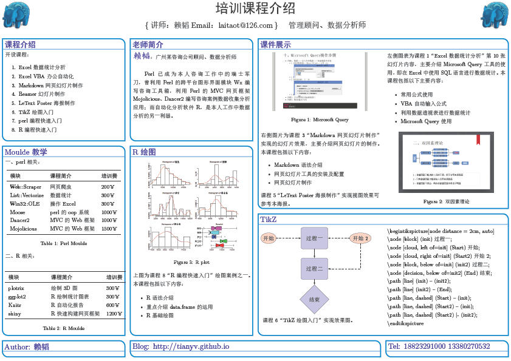

name: inverse layout: true theme: mytheme.css class: center, middle, inverse --- ## EXCEL VBA简单教程 <p> </p> 作者：@赖 韬 邮箱：laitaot@126.com 2015 年 04月 20日 --- layout: false ### 简介  --- layout: false ## 一、常用快捷键： - Ctrl+G 打开“立即窗口” ？now - Ctrl+J 打开“属性/方法列表”和“自动完成关键字” - Ctrl+Shift＋J 打开“常数列表” ActiveWindow.View = ## 二、快速运行常用宏的方法 #### 1.1使用键盘快捷键运行宏 ``` 设置步骤：工具→宏→选项 ``` #### 1.2通过菜单运行宏 ``` 设置步骤：工具→自定义→命令→新菜单→拖动→重命名菜单（`My Tools`） →宏→拖动→重命名二级菜单（`&Example Ctrl+W`）→指定宏 ``` --- layout: false ## 三、录制、查看和修改宏代码 #### 1.0通过录制宏生成代码： - 1.1在“**工具**”菜单上，指向“**宏**”，然后单击“**录制新宏**”。 - 1.2指定形如“**Ctrl+***”的快捷方式，如需要可更改宏名称，然后单击“确定”启动录制器。 - 1.3在Excel中进行相应操作, 如选中一个"**单元格**”，填充其颜色为红色,单击"确定"。 - 1.4单击“**停止录制**”工具栏上的“**停止录制**”按钮。 <p> </p> #### 2.0查看录制好的宏代码： - 2.1在“**工具**”菜单上，指向“**宏**”，然后单击“**宏**”。 - 2.2选择宏的名称，然后单击“**编辑**”按钮。 --- layout: false #### 3.0修改宏代码： ##### 3.1 删除不必要的属性 有时录制宏时，宏录制器会记录制额外的一些未做更改的属性设置。这时可从记录的宏中删除不必要的属性以简化代码，因为只需设置少数属性，所以简化后的宏将运行得更快。 如当前选中的单元格更改其“字体”为“隶书”,“字号”为“14”，代码可在VB中查看。 可将宏简化为： ```VBA Sub Macro1（） With Selection.Font .Name = "隶书" .Size = 14 End With End Sub ``` --- layout: false #### 3.2简化结构相同的对象 如果发现一个对象引用被多次使用，则可以将此对象用**Set** 设置为对象变量， 或使用**With … End With**结构以减少对对象的访问。 作用:简化代码的书写同时通过减少对象的引用加快VBA代码的运行。继续 以上例的代码为例： <p> </p>  --- layout: false #### 3.3删除不必要的参数 当宏录制器记录一个方法时，会包含所有参数值。下面的宏录制将当前工作表另存为Test.xls 的文档。所得到的宏包含了Save 方法的所有参数。 可以删除宏中不需要的参数。例如，可以删除所有设置为空字符串的参数，如Password:="",如下所示: ```VBA Sub Macro（） ActiveWorkbook.SaveAs Filename:="F:\test.xls", _ FileFormat:=xlNormal, _ ReadOnlyRecommended:=False, _ CreateBackup:=False End Sub ``` --- layout: false ## 四、理解对象、属性和方法 1.1对象代表一个元素，如工作簿、工作表、区域、行、列、单元格等。 ``` 例如，`Application`对象代表Excel。使用`Application`对象可以控制应用程序级的设置、内置的 Excel函数以及高级方法，例如`InputBox`方法。 集合也是一个对象，该对象包含多个其他对象，通常这些对象属于相同的类型；例如，打开的`WorkBook` 就是`WorkBooks`集合的一个成员。 ``` <p> </p> 1.2属性是对象的一种特性或该对象行为的一个方面。 ``` 例如，单元格内的字符包含`字体:Name`,`字号:Size`,`字体颜色:ColorIndex`等属性。若要更改一 个对象的特征，可以修改其属性值。 ``` 1.3方法是对象可以执行的动作。方法通常带有参数，以限定执行动作的方式。 --- layout: false ## 四、理解对象、属性和方法 1.4在大多数情况下，方法是动作，而属性是性质。使用方法可使对象发生某些事情， 而使用属性则可返回对象的信息，或者引起对象的某个性质的更改。 1.5在代码编辑窗口，选中单个对象或者属性，利用F1快捷键可以查看Excel联机帮 助中的详细解释。 <p> </p> 2.1例如： ``` 对象可以通过`.`一层层往下连接，换句话说就是要确定一个对象，必须找到其所有的上层 对象，中间用`.`进行连接，一般最顶层的对象为`ActiveWorkbook、ThisWorkbook、 WorkSheets、Sheets 、ActiveWindow、ActiveCell`和`Selection`。 如`Sheets(1).Range("A1").Font`表示： 当前工作薄→第1个工作表→第1个单元格的Font对象。 而`Sheets(1).Range("A1").Font.Size = 14`表示： 修改当前工作薄第1个工作表第1个单元格的字体大小属性为14号。 如`WorkBook`对象具有`Open`、`Save`、`SaveAs`、`Close`等方法。而方法一般都带有参数， 以下代码就表示将当前工作薄另存为F盘的test.xls文档，参数`Filename`通过符号`:=` 进行赋值。 `ActiveWorkbook.SaveAs Filename:="F:\test.xls"` ``` --- layout: false ## 五、利用函数显示属性值 msgbox或Debug.Print函数在编写代码时用于查错、确认变量值和对象属性值很有帮助。 以下代码可显示文档中表格的数量。 ```VBA Sub Macro1() `将当前工作薄工作表的数量属性赋值给变量num` num = Sheets.Count MsgBox (num) Debug.Print num End Sub ``` --- layout: false ## 六、语法基础简介 #### 1.1VBA规则： - VBA不区分标识符的字母大小写，一律认为是小写字母; - 注释可以使用**Rem**或者符号**{'}**; - 区别Rem只能单独一行，{'}可以位于别的语句之尾，也可单独一行 - VBA一般一行一个语句，如需同行写几个语句用**{:}**; - 如a=1:b=2 - 语句太长需断行，可使用空白加下划线**{ _}**作为断行标记; - **{＆}**是VBA的连接符，用来联接字符变量。 --- layout: false #### 1.2判断与流程控制: <p> </p>  --- layout: false #### 1.2判断与流程控制: <p> </p>  --- layout: false #### 1.3一些常用函数： Abs、Rnd、Round、Int、Fix、Mod、Len、Mid、Left、Right、Split、Array、UBound、Space、Trim、Resize （以上函数录入代码编辑窗口选中后按快捷键F1可以查看其使用说明） <p> </p>  --- layout: false ## 七、数组及For Each…Next语句 For Each…Next语句: 主要功能是对一个数组或集合对象进行遍历，让所有元素重复执行一次语句 <p> </p>  --- layout: false ## 八、过程及其调用 #### 1.1Function 过程（函数） ##### 1.1.1Function 过程: 一系列由Function 和End Function 语句所包含起来的Visual Basic 语句。Function 过程可经由调用者过程传递参数，例如常数、变量、或是表达式等来调用它。函数会在过程的一个或多个语句中指定一个值给函数名称来返回值。 ```VBA Sub Macro1() For I = 8 To 11 J = Res(I) '调用函数Res()并将返回值赋值给J MsgBox (J) Next I End Sub Function Res(N) '定义函数Res() Select Case Len(N) Case Is = 1 Res = "0" & N Case Is = 2 Res = N End Select End Function ``` 如果一个Function 过程没有参数，它的Function 语句必须包含一个空的圆括号。 Function 过程和Sub 过程很类似，但Function可以定义有返回值的函数。 --- layout: false ##### 1.1.2按值传递(ByVal)，默认按地址传递(ByRef) 要确保该被调函数不改变传递的参数值，应在参数名称之前加上关键字ByVal，如下所示： ```VBA Sub TwoNumbers() Dim num1 As Integer, num2 As Integer num1 = 10: num2 = 20 Debug.Print MyAverage(num1, num2) Debug.Print num1: Debug.Print num2 End Sub Function MyAverage(ByVal num1, ByVal num2) num1 = num1 + 1 MyAverage = (num1 + num2) / 2 End Function ``` --- layout: false ##### 1.1.3Optional参数 Optional定义函数中的可选参数，IsMissing用于检测是否传送了可选参数，未传送则返回为true ```VBA Function Avg(num1, num2, Optional num3) Dim totalNums As Integer totalNums = 3 If IsMissing(num3) Then num3 = 0 totalNums = totalNums - 1 End If Avg = (num1 + num2 + num3) / totalNums End Function ``` --- layout: false #### 1.2 Sub 过程 Sub 过程是一系列由Sub 和End Sub 语句所包含起来的Visual Basic 语句，它们会执行动作却不能返回一个值。Sub 过程可有参数，例如常数、变量、或是表达式等来调用它。 如果一个Sub 过程没有参数，则它的Sub 语句必须包含一个空的圆括号。 ## 九、引用工作表 引用名为Sheet1的默认工作表（假如为第1个工作表）可以有以下几个实现方式： WorkSheets(“Sheet1”)、WorkSheets(1)、Sheets(“Sheet1”)、Sheets(1) --- layout: false #### 十、引用单元格和区域  ``` 注：`Range`的A1样式可以使用符号[]对其进行简写，如`Range("A1:B5")`可 简写为`[A1:B5]` ``` --- layout: false ##### 1.1Offset属性 还可使用Offset属性相对于其它单元格来引用单元格，假如当前活动单元格为Cells(1,1) 则ActiveCell.Offset(1,3)表示单元格Cells(2,4)，测试代码如下： ```VBA `可简写为Sheets(1).[a1].Select` Sheets(1).Range("A1").Select ActiveCell.Offset(1, 3) = 14 ``` ##### 1.2Resize属性 ```VBA A = Array(1, 2, 3) n = UBound(A) + 1 Range("A1").Resize(, n).Value = A ``` --- layout: false #### 1.3选择单元格的其它方法 如果你经常需要访问你工作表里某些遥远的单元格，你可能已经对下面的键 盘快捷键很熟悉：**End+上箭头**，**End+下箭头**，**End+左箭头**和**End+右箭头**。 在VBA中，你可以使用End属性快速地移动到遥远的单元格。  ``` 注意，`End`属性要求一个自变量来表示你要移动的方向。使用下列Excel内置 的常数来跳到具体的方向：`xlright`,`xlleft`,`xlup`,`xldown`。 ``` Excel使用**EntireRow**和**EntireColumn**属性来选择整行或整列。  --- layout: false ## 十一、对单元格或区域输入公式 ``` `=`、`FormulaR1C1`、`WorksheetFunction`或`FormulaArray` ```  --- layout: false ## 十一、对单元格或区域输入公式  --- layout: false ## 十一、对单元格或区域输入公式  --- layout: false ## 十二、单元格区域边界的确认 1.1CurrentRegion属性，当前对象区域是一个边缘是任意空行和空列组合成的范围 ```VBA `选择当前活动单元格所包含的范围` ActiveCell.CurrentRegion.Select ``` 1.2 UsedRange属性，返回工作表上已使用区域的 Range 对象 ```VBA `选中已使用区域，包括空行空列` ActiveSheet.UsedRange.Select ``` 另外UsedRange属性的以下两句结合For…Next循环可以对区域单元格进行操作 ```VBA MaxCols = Sheets(1).UsedRange.Columns.Count MaxRows = Sheets(1).UsedRange. Rows.Count ``` --- layout: false ## 十三、提高速度 #### 1.1关闭屏幕更新 ```VBA Application.ScreenUpdate = False 'VBA程序运行结束时再将该值设回来： Application.ScreenUpdate = True ``` #### 1.2尽量减少使用对象引用，尤其在循环中 使用Set 设置为对象变量，或使用With … End With结构 #### 1.3减少对象的激活和选择 object.Activate和object.Select多数情况下不是必须的 ```VBA Sheets(“Sheet1”).Select: Range(“A1”).Value = 100 '可改写为： Sheets(“Sheet1”). Range(“A1”).Value = 100 ``` --- layout: false ## 十四、其他 #### 1.1声明变量 类型声明字符  ```VBA `Dim myNum As Integer` 等同于: `Dim myNum%` Sub Macro1() Dim myNum As Integer myNum = 1 Debug.Print myNum End Sub Sub Macro1() Dim myNum% myNum = 1 Debug.Print myNum End Sub ``` --- layout: false ## 十五、正则表达式 ```VBA StrA = ActiveWorkbook.Name With CreateObject("VBSCRIPT.REGEXP") .Global = 1 .Pattern = "(\d{1,3})(.*)\.xls" Numa = .Replace(StrA, "$1") Strb = .Replace(StrA, "$2") End With Debug.Print Numa Debug.Print Strb ``` 将格式为1至3个数+任意字符的EXCEL文件名分成“**数字**”及“**字符**”两个变量 --- template: inverse ## Q & A #### [返回Blog: tianyv.github.io](http://tianyv.github.io/train)